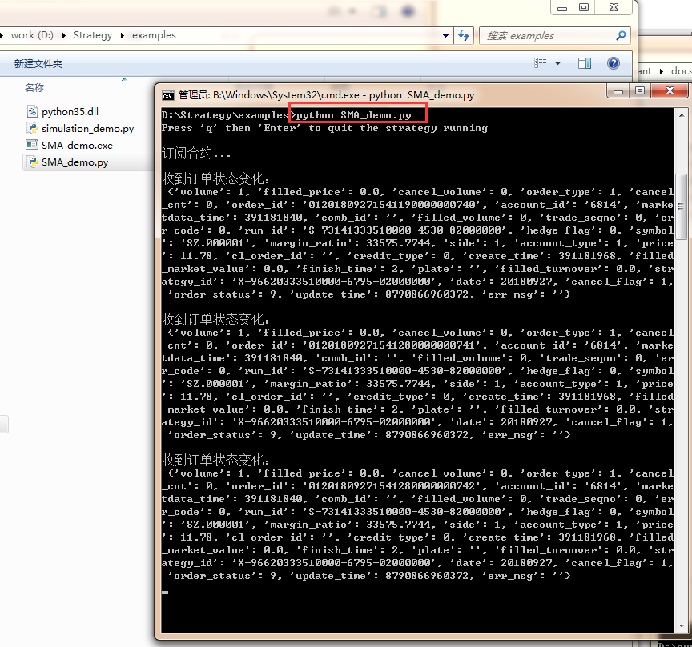
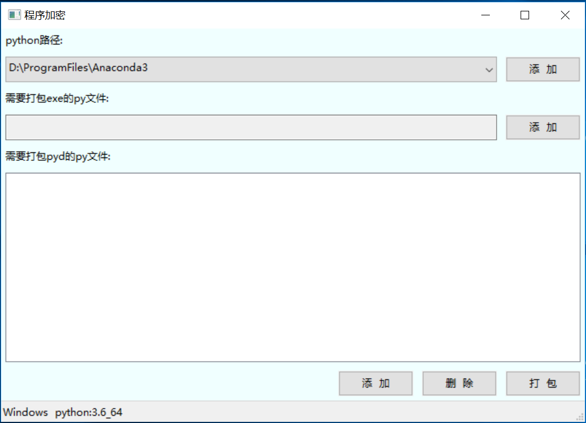
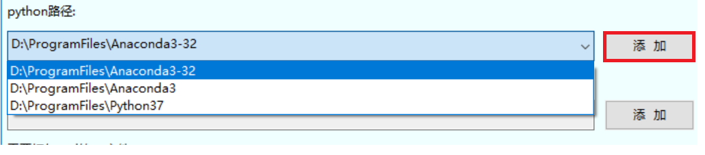
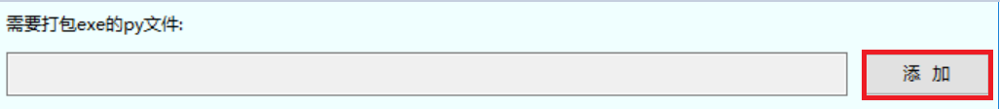
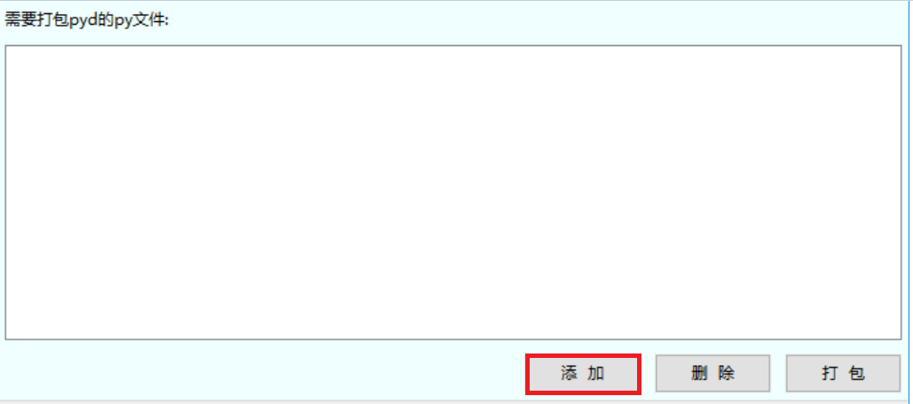
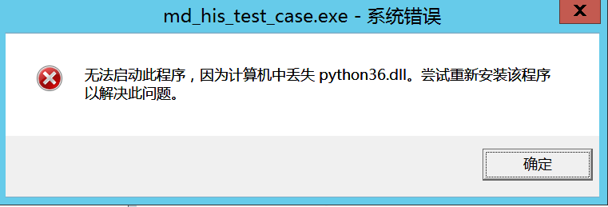
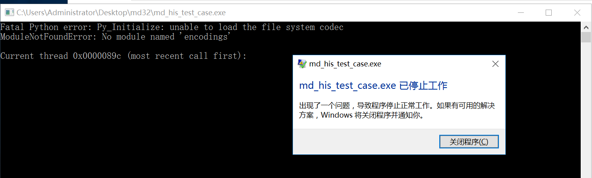
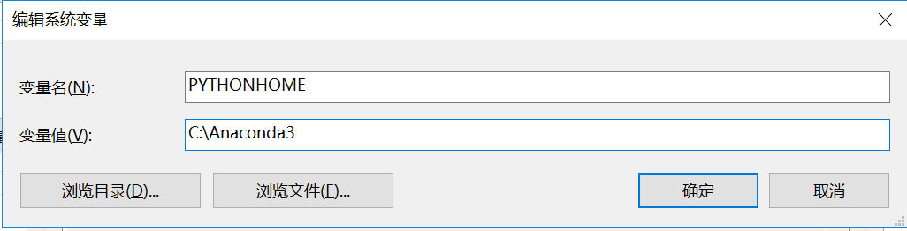
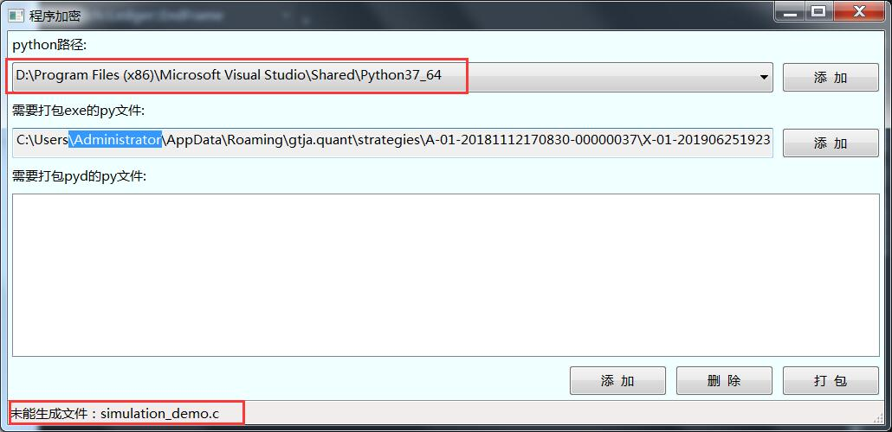

君弘君易交易系统 (PYTHON)¶
安装指南¶
1. python环境准备¶
确保本地已安装python环境（建议使用 python3.6.5 或 Anaconda3-5.2.0 ），安装时请勾选Add Python 3.6 to PATH, 否则需要手动在环境变量中添加Python目录。如果本地安装了多个python版本，也需要在环境变量中指定Python目录。
设置python环境变量 (若Python的安装目录为D:Python36)
右键点击”计算机”，然后点击”属性”
然后点击”高级系统设置”
双击”系统变量”窗口下面的”Path”,添加python安装路径即可, 注意路径直接用分号”；”隔开
在”系统变量”窗口下面选择新建，添加”PYTHONHOME”，变量值为python安装路径
设置成功以后，重新打开cmd命令行，输入命令”python”，显示使用的python版本为3.6
Note
确保python安装目录以及工作目录中不含有空格，否则可能会导致策略运行失败。
3. 下载策略安装包¶
获取策略模板版本压缩包 策略模板版本Vxx.xx.xx-release-python3.7z，并解压到工作目录（以D:\Strategy为例）。
目录结构及其说明如下图：
4. 安装¶
5. 验证安装是否成功¶
cd到examples文件夹，运行以下命令启动demo程序
Note
确保在策略同级目录下，存在strategy.ini文件，该文件指定了回测模式、交易账号等信息。如果策略运行错误，可查看同级的log目录，分为网关日志、行情日志、交易日志和策略日志。
# 极简的买入持有策略
python BaH_demo.py
# 包含常用api的用法
python simulation_demo.py
# 均线策略，需要依赖talib包
# pip install ta-lib
python SMA_demo.py
运行SMA_demo成功的示例如下：
策略文档上传至实盘云机前可选择加密，具体请参考 策略加密
快速上手¶
2. 编写第一个策略¶
该策略为最简单的买入并持有万科A股票。当接收到第一个Bar行情时即买入股票，并一直持有。
1 2 3 4 5 6 7 8 9 10 11 12 13 14 15 16 17 18 19 20 21 22 23 24 25 26 27 28 29 30 31 32 33 34 35 36 37 38 39 40 41 42 43 44 45 46 | # -*- coding: utf-8 -*-
# Buy and Hold
from sparkquant import *
def init(context):
# 设置这个策略当中会用到的参数，在策略中可以随时调用，这个策略使用买入并持有万科A股票
context.SYMBOL = 'SZ.000002' # 使用的合约编号
context.ACCOUNT_ID = '6814' # 报单时指定的账号
context.VOLUME = 100 # 报单数量（股票单位：股，期货单位：手）
context.fired = False # 是否已报单
# 订阅行情数据
print('订阅合约...')
subscribe([context.SYMBOL + '.bar'])
def on_bar(context, bar_dict):
# print(bar_dict)
# 接收bar数据，在收到第一个bar行情时买入股票
if not context.fired:
print("报单...")
order_price = bar_dict['close'] # 使用最新价
order_volume(context.ACCOUNT_ID, context.SYMBOL, context.VOLUME, order_price)
context.fired = True
def on_order_status(context, order):
# 如何接收订单状态变化事件
# 在实盘中，需要考虑报单不能全部成交的情况，并在此处进行追单处理
print('\n收到订单状态变化：\n', order)
def on_execution_report(context, exec_report):
# 如何接收成交回报事件
print('\n收到成交回报： \n', exec_report)
if __name__ == '__main__':
# 如何开始运行策略
run(init=init,
on_bar=on_bar,
on_order_status=on_order_status,
on_execution_report=on_execution_report,
is_async=True)
|
3. 运行策略¶
可以选择在Python IDE中运行，也可以直接在命令窗口运行如下代码
python demo.py
如需退出策略执行，输入 q 并回车。
更多策略接口请参考 API介绍
更多策略示例请参考 策略示例
4. 第三方库依赖（实盘）¶
在实盘环境中，策略如调用了云机环境中未提供的第三方Python库，请联系平台客服人员进行安装，否则会导致策略无法正常运行。
云机中默认已安装的第三方库：
模块名称 |
版本 |
简介 |
|---|---|---|
NumPy |
1.9.3 |
NumPy系统是Python的一种开源的数值计算扩展。NumPy（Numeric Python）提供了许多高级的数值编程工具，如：矩阵数据类型、矢量处理，以及精密的运算库。专为进行严格的数字处理而产生 |
TALib |
0.4.9 |
TALib是一个处理金融数据和技术分析的开放代码库 |
5. 常见问题¶
启动策略时提示“交易服务内部初始化错误”
解决方案：该文件可能被未正常结束的python进程占用，结束此进程再试。多个策略同时运行时，请确保每个策略可执行文件置于不同目录下。
策略程序架构¶
1. 策略程序初始化¶
通过init函数初始化策略,策略启动即会自动执行。在init函数中可以：
定义全局变量。 通过添加 context - 策略上下文 包含的属性可以定义全局变量，如context.x,该属性可以在全文中进行传递。
定义调度任务。 可以通过 schedule - 设定定时任务 ，程序在指定时间自动执行策略算法。
准备历史数据。 通过 数据查询 函数获取历史数据
订阅实时行情。 通过 subscribe - 订阅行情 ，用以触发行情 数据事件 处理函数。
策略 必须提供init函数 的实现，以在其中进行必要的初始化操作。
2. 策略入口¶
run - 启动策略 函数用于启动策略。通过 run - 启动策略 函数可以注册各种用户自定义的回调函数，指定配置文件路径和日志文件路径， 以及运行模式（异步/同步）等。其典型应用方式如下：
1 2 3 4 5 6 7 8 9 | if __name__ == '__main__':
run(init=init,
on_bar=on_bar,
on_tick=on_tick,
on_order_status=on_order_status,
on_execution_report=on_execution_report,
config_dir=os.path.dirname(os.path.realpath(sys.argv[0])),
log_dir=os.path.dirname(os.path.realpath(sys.argv[0])),
is_async=True)
|
策略 必须调用run函数 以启动策略。
3. 行情事件处理函数¶
在 run - 启动策略 函数中可以注册返回tick数据和返回bar数据的回调函数。当通过 subscribe - 订阅行情 函数订阅的行情到达时，会 产生如下的 数据事件 (视订阅的数据而定):
盘口tick数据事件。 通过 on_tick - 返回Tick数据 回调函数响应tick数据事件，可以在该函数中继续添加自己的策略逻辑,如进行数据计算、交易等。
分时bar数据事件。 通过 on_bar - 返回Bar数据 回调函数响应bar数据事件，可以在该函数中继续添加自己的策略逻辑，如进行数据计算、交易等
4. 交易事件处理函数¶
在 run - 启动策略 函数中可以注册返回报单状态和返回成交回报的回调函数。当通过 交易函数 进行交易时，会产生如下 交易事件 ：
报单状态变化事件。 当报单状态产生变化时会触发 on_order_status - 返回报单状态 回调函数，用于监测委托状态变更。
成交回报事件。 当交易委托被执行后会触发 on_execution_report - 返回成交回报 回调函数，用于监测委托执行状态。
重要概念¶
symbol - 代码标识¶
代码标识（symbol）一般由 交易市场代码 ， 交易标的代码 , 和 实时行情可订阅数据类型 按某种规则组合而成， 典型的组合规则举例如下：
行情和交易的symbol由“交易市场代码.交易标的代码”组合而成，例如
history('SH.600000', '1tick', '2018/08/06 10:0:0')。订阅行情的symbol有“交易市场代码.交易标的代码.实时行情可订阅数据类型”组合而成，例如
subscribe('SZ.000002.bar')。
交易市场代码¶
市场代码 |
说明 |
|---|---|
SH |
上海证券交易所 |
SZ |
深圳证券交易所 |
CFFEX |
中金所 |
SHFE |
上期所 |
CZCE |
郑商所 |
DEC |
大商所 |
HK |
香港证券交易所 |
SHOP |
上交所期权市场 |
交易标的代码¶
交易表代码是指交易所给出的交易标的代码, 包括股票, 期货, 期权, 指数, 基金等代码。 具体的代码请参考交易所的给出的证券代码定义。
实时行情可订阅数据类型¶
数据类型名 |
说明 |
|---|---|
tick |
tick级行情数据 |
bar |
分钟K线数据 |
index |
指数行情数据 |
zw |
逐笔委托数据 (仅深交所) |
zc |
逐笔成交数据 |
fast |
撮合行情数据 (仅深交所) |
queue |
委托队列数据 |
mode 运行模式¶
策略支持3种运行模式，回测模式，模拟模式和实盘模式，用户需要在运行策略时选择模式。
回测模式¶
订阅指定时段、指定交易代码、指定数据类型的行情，行情服务器将按指定条件全速回放对应的行情数据。 适用的场景是策略回测阶段，快速验证策略的绩效是否符合预期。
模拟模式¶
订阅行情服务器推送的实时行情，也就是交易所的实时行情，只在交易时段提供。 所有的交易操作由系统提供的撮合规则进行模拟撮合交易。
撮合规则：
1. tick撮合
a. 委托下达后，收到第一笔该委托标的合约的tick数据时，利用tick中的盘口数据尝试对该笔委托进行撮合：
如为买委托时，当买价-滑点>=卖1价时认为该笔委托可以和卖1成交，成交量为min(委托量,卖1量*成交比例)，
如委托量还有剩余继续尝试和卖2盘口成交，依次类推直到不再成交或者全额成交。
b. 如该笔委托尚未进入终止状态，在收到标的合约的第一笔tick数据之后的每笔tick数据时，尝试利用该tick中的最新价对 该笔委托进行撮合： 如为买委托时，当买价-滑点>=最新价时认为该笔委托在该笔tick中有成交，成交量为min(委托量,该笔tick成交量*成交比例)。
2. 分钟k线撮合
委托下达后，如该笔委托尚未进入终止状态，在收到每一笔分钟k线数据时，尝试利用该分钟k线的最新价对。
该笔委托进行撮合：
如为买委托时，当买价-滑点>=最新价时认为该笔委托在该分钟k线内有成交，成交量为min(委托量,该分钟k线内成交量*成交比例)。
实盘模式¶
订阅行情服务器推送的实时行情，也就是交易所的实时行情，只在交易时段提供。 所有的交易操作均会交由指定的交易所去执行。
context 策略上下文¶
context是策略运行上下文环境对象，该对象将会在你的算法策略的任何方法之间做传递， 其中包含了一些常用的属性和方法（概要信息请参考 数据结构 部分的 Context ， 详情信息请参考 策略接口 部分的 context - 策略上下文 ），用户也可以根据自己的需求定义无限多种自己随后需要的属性。
数据结构¶
Context¶
更具体的信息请参考 context - 策略上下文
函数名 |
函数类型 |
返回类型 |
说明 |
|---|---|---|---|
run_mode |
属性 |
int |
获取运行模式，1：回测，2：模拟，3：实盘 |
now |
属性 |
datetime |
获取当前日期和时间:
|
strategy_id |
属性 |
str |
获取策略id |
run_id |
属性 |
str |
获取策略运行实例id |
sys_account_id |
属性 |
str |
获取系统账号 |
universe |
属性 |
list[str] |
获取所有当前订阅的合约代码 |
log_level |
属性 |
int |
获取日志级别，1: Debug, 2: Info, 3: Warn, 4: Error |
cash |
静态 |
list[Cash] |
策略资金账户数据列表或总资金。 |
position |
静态 |
list[ Position ] |
查询单个标的证券的持仓列表。 |
positions |
静态 |
list[ Position ] |
查询策略持仓列表。 |
order |
静态 |
查询单一订单详情。 |
|
orders |
静态 |
list[ Order ] |
查策略实例订单列表，支持分页查询。 |
orders |
静态 |
list[ Trade ] |
查单个订单成交列表。 |
SecurityBarData¶
字段名 |
类型 |
说明 |
|---|---|---|
date |
int |
日期 YYYYMMDD |
time |
int |
时间(北京时间) HHMM |
open |
float |
开盘价 |
high |
float |
最高价 |
low |
float |
最低价 |
close |
float |
收盘价 |
volume |
int |
成交量 |
turnover |
int |
成交额 |
open_interest |
int |
累计持仓总量 |
SecurityTickData¶
字段名 |
类型 |
说明 |
|---|---|---|
time |
int |
时间(HHMMSSmmm) |
status |
int |
状态 |
pre_close |
int |
前收盘价 |
open |
float |
开盘价 |
high |
float |
最高价 |
low |
float |
最低价 |
match |
float |
最新价 |
ask_price1 |
float |
申卖价1 |
ask_price2 |
float |
申卖价2 |
ask_price3 |
float |
申卖价3 |
ask_price4 |
float |
申卖价4 |
ask_price5 |
float |
申卖价5 |
ask_price6 |
float |
申卖价6 |
ask_price7 |
float |
申卖价7 |
ask_price8 |
float |
申卖价8 |
ask_price9 |
float |
申卖价9 |
ask_price10 |
float |
申卖价10 |
ask_vol1 |
int |
申卖量1 |
ask_vol2 |
int |
申卖量2 |
ask_vol3 |
int |
申卖量3 |
ask_vol4 |
int |
申卖量4 |
ask_vol5 |
int |
申卖量5 |
ask_vol6 |
int |
申卖量6 |
ask_vol7 |
int |
申卖量7 |
ask_vol8 |
int |
申卖量8 |
ask_vol9 |
int |
申卖量9 |
ask_vol10 |
int |
申卖量10 |
bid_price1 |
float |
申买价1 |
bid_price2 |
float |
申买价2 |
bid_price3 |
float |
申买价3 |
bid_price4 |
float |
申买价4 |
bid_price5 |
float |
申买价5 |
bid_price6 |
float |
申买价6 |
bid_price7 |
float |
申买价7 |
bid_price8 |
float |
申买价8 |
bid_price9 |
float |
申买价9 |
bid_price10 |
float |
申买价10 |
bid_vol1 |
int |
申买量1 |
bid_vol2 |
int |
申买量2 |
bid_vol3 |
int |
申买量3 |
bid_vol4 |
int |
申买量4 |
bid_vol5 |
int |
申买量5 |
bid_vol6 |
int |
申买量6 |
bid_vol7 |
int |
申买量7 |
bid_vol8 |
int |
申买量8 |
bid_vol9 |
int |
申买量9 |
bid_vol10 |
int |
申买量10 |
num_trades |
int |
成交笔数 |
volume |
int |
成交量 |
turnover |
int |
成交额 |
total_bid_vol |
int |
委托买入总量 |
total_ask_vol |
int |
委托卖出总量 |
weighted_avg_bid_price |
float |
加权平均委买价格 |
weighted_avg_ask_price |
float |
加权平均委卖价格 |
iopv |
int |
IOPV净值估值 |
yield_to_maturity |
float |
到期收益率 |
high_limited |
float |
涨停价 |
low_limited |
float |
跌停价 |
prefix |
str |
证券信息前缀 |
syl1 |
float |
市盈率1,2位小数.股票：价格/上年每股利润,债券：每百元应计利息 |
syl2 |
float |
市盈率2,2位小数.股票：价格/本年每股利润, 债券：到期收益率,基金：每百份的IOPV 或净值 权证：溢价率 |
sd2 |
float |
升跌2（对比上一笔） |
trading_phase_code |
str |
交易状态代码, 上交所与深交所字段含义不同，参见以下注解：
|
pre_iopv |
int |
基金T-1日收盘时刻IOPV.仅标的为基金时有效 |
FuturesTickData¶
字段名 |
类型 |
说明 |
|---|---|---|
time |
int |
时间(HHMMSSmmm) |
status |
int |
状态 |
pre_open_interest |
int |
昨持仓 |
pre_close |
float |
昨收盘价 |
pre_settle_price |
float |
昨结算价 |
open |
float |
开盘价 |
high |
float |
最高价 |
low |
float |
最低价 |
match |
float |
最新价 |
volume |
int |
成交总量 |
turnover |
int |
成交总金额 |
open_interest |
int |
持仓总量 |
close |
float |
今收盘 |
settle_price |
float |
今结算价 |
high_limited |
float |
涨停价 |
low_limited |
float |
跌停价 |
pre_delta |
int |
昨虚实度 |
curr_delta |
int |
今虚实度 |
ask_price1 |
float |
申卖价1 |
ask_price2 |
float |
申卖价2 |
ask_price3 |
float |
申卖价3 |
ask_price4 |
float |
申卖价4 |
ask_price5 |
float |
申卖价5 |
ask_vol1 |
int |
申卖量1 |
ask_vol2 |
int |
申卖量2 |
ask_vol3 |
int |
申卖量3 |
ask_vol4 |
int |
申卖量4 |
ask_vol5 |
int |
申卖量5 |
bid_price1 |
float |
申买价1 |
bid_price2 |
float |
申买价2 |
bid_price3 |
float |
申买价3 |
bid_price4 |
float |
申买价4 |
bid_price5 |
float |
申买价5 |
bid_vol1 |
int |
申买量1 |
bid_vol2 |
int |
申买量2 |
bid_vol3 |
int |
申买量3 |
bid_vol4 |
int |
申买量4 |
bid_vol5 |
int |
申买量5 |
IndexTickData¶
字段名 |
类型 |
说明 |
|---|---|---|
time |
int |
时间(HHMMSSmmmm) |
open |
float |
今开盘指数 |
high |
float |
最高指数 |
low |
float |
最低指数 |
match |
float |
最新指数 |
volume |
int |
参与计算相应指数的交易数量 |
turnover |
int |
参与计算相应指数的成交金额 |
pre_close |
float |
前收盘指数 |
TickByTickEntrust¶
字段名 |
类型 |
说明 |
|---|---|---|
channel_no |
int |
频道代码 |
seq |
int |
委托序号(在同一个channel_no内唯一，从1开始连续) |
price |
int |
委托价格 |
qty |
int |
委托数量 |
side |
str |
‘1’:买; ‘2’:卖; ‘G’:借入; ‘F’:出借 |
ord_type |
str |
订单类别: ‘1’: 市价; ‘2’: 限价; ‘U’: 本方最优 |
TickByTickTrade¶
字段名 |
类型 |
说明 |
|---|---|---|
channel_no |
int |
频道代码 |
seq |
int |
委托序号(在同一个channel_no内唯一，从1开始连续) |
price |
int |
委托价格 |
qty |
int |
委托数量 |
money |
int |
成交金额 |
bid_no |
int |
买方订单号 |
ask_no |
int |
卖方订单号 |
trade_flag |
str |
SH: 内外盘标识(‘B’:主动买; ‘S’:主动卖; ‘N’:未知) SZ: 成交标识(‘4’:撤; ‘F’:成交) |
Order¶
字段名 |
类型 |
说明 |
|---|---|---|
strategy_id |
str |
策略id |
run_id |
str |
策略运行id，代表策略的一次运行对应的id，即回测/模拟/实盘id |
order_id |
str |
后台系统生成的内部订单id |
cl_order_id |
str |
订单的客户方id |
product_id |
str |
交易标的，格式为市场.证券ID/市场.合约ID |
account_id |
str |
用户资金账户id |
account_type |
int |
用户资金账户类型，参考 AccountType 定义 |
date |
int |
订单创建日期，格式：YYYYMMDD |
trade_seqno |
int |
交易序号，即批次号 |
order_status |
int |
订单状态，参考 OrderStatus 定义 |
order_type |
int |
订单类型，参考 OrderType 定义 |
side |
int |
多/空，参考 OrderSide 定义 |
credit_type |
int |
信用类型，参考 CreditType 定义 |
volume |
int |
订单数量 |
price |
float |
订单委托价 |
filled_volume |
int |
订单累计已完成数量 |
filled_turnover |
float |
订单累计已完成金额 |
filled_price |
float |
成交均价 |
filled_market_value |
float |
成交合约价值 |
margin_ratio |
float |
保证金比率 |
marketdata_time |
int |
触发订单的行情时间，精确到微秒，格式HHMMSSmmmuuu |
create_time |
int |
订单创建时间，精确到微秒，格式HHMMSSmmmuuu |
update_time |
int |
订单更新时间，精确到微秒，格式HHMMSSmmmuuu |
finish_time |
int |
订单完成时间，精确到微秒，格式HHMMSSmmmuuu |
cancel_flag |
int |
撤单标识，参考 CancelFlag 定义 |
cancel_volume |
int |
撤单量 |
cancel_cnt |
int |
撤单次数 |
hedge_flag |
int |
组合投机套保标志，用于期货交易, 参考 HedgeFlag 定义 |
comb_id |
str |
组合投机套保编号，用于期货交易 |
plate |
str |
期权交易板块 |
err_code |
int |
订单委托错误码 |
err_msg |
str |
订单委托错误消息 |
Trade¶
字段名 |
类型 |
说明 |
|---|---|---|
strategy_id |
str |
策略id |
run_id |
str |
策略运行id，代表策略的一次运行对应的id，即回测/模拟/实盘id |
order_id |
str |
后台系统生成的内部订单id |
cl_order_id |
str |
订单的客户方id |
product_id |
str |
交易标的，格式为市场.证券ID/市场.合约ID |
account_id |
str |
用户资金账户id |
account_type |
int |
用户资金账户类型，参考 AccountType 定义 |
date |
int |
订单创建日期，格式：YYYYMMDD |
trade_seqno |
int |
交易序号，即批次号 |
side |
int |
多/空，参考 OrderSide 定义 |
order_type |
int |
订单类型，参考 OrderType 定义 |
exec_type |
int |
成交回报类型，参考 TradeReportType 定义 |
volume |
int |
成交数量 |
price |
float |
成交价格 |
turnover |
float |
成交金额 |
market_value |
float |
成交合约市值 |
order_price |
float |
委托价格 |
order_volume |
int |
委托数量 |
transact_time |
int |
成交时间，精确到微秒，格式HHMMSSmmmuuu |
Position¶
字段名 |
类型 |
说明 |
|---|---|---|
strategy_id |
str |
策略id |
run_id |
str |
策略运行id，代表策略的一次运行对应的id，即回测/模拟/实盘id |
account_id |
str |
用户资金账户id |
account_type |
int |
用户资金账户类型，参考 AccountType 定义 |
product_id |
str |
交易标的，格式为市场.证券ID/市场.合约ID |
side |
int |
持仓方向，参考 PositionSide 定义 |
volume |
int |
总仓量 |
avail_volume |
int |
可用仓量 |
frozen_volume |
int |
冻结仓量 |
today_volume |
int |
今仓总量 |
today_frozen_volume |
int |
今仓冻结量 |
today_avail_volume |
int |
今仓可用量 |
yesterday_volume |
int |
昨仓总量 |
yesterday_frozen_volume |
int |
昨仓冻结量 |
yesterday_avail_volume |
int |
昨仓可用量 |
avg_cost |
float |
开仓均价 |
hold_cost |
float |
持仓均价 |
create_day |
int |
初始建仓日期，格式：YYYYMMDD |
update_day |
int |
仓位变更日期，格式：YYYYMMDD |
create_time |
int |
初始建仓时间，精确到微秒，格式HHMMSSmmmuuu |
update_time |
int |
仓位变更时间，精确到微秒，格式HHMMSSmmmuuu |
CancelDetail¶
字段名 |
类型 |
说明 |
|---|---|---|
order_id |
str |
后台系统生成的内部订单id |
cancel_order_id |
str |
订单对应的撤单委托id |
err_code |
int |
撤单错误码 |
err_msg |
str |
撤单错误消息 |
API介绍¶
定时器¶
schedule - 设定定时任务¶
-
sparkquant.api.td_api.schedule(func, timer_type, interval=0, time=0)¶ 设定定时任务。
- Parameters
func – 定时运行函数。其参数为 context - 策略上下文。
timer_type (str) – 定时器类型。目前仅支持‘timer’和‘day’：设定一个时间间隔的定时任务使用‘timer’， 设定每日某个时间点的定时任务使用‘day’。
interval (int) – 定时器的时间间隔，单位为毫秒（ms），仅timer_type指定为‘timer’时有效。
time (int) – 每日定时任务执行时间，格式为HHMMSS，仅timer_type指定为‘day’时有效。
- Returns
- Example
1 2 3 4 5 6 7 8 9 10 11 12 13 14 15 16 17
#每2秒钟执行strategy_timer函数 schedule(strategy_timer, timer_type='timer', interval=2000) #每天的08:57:00执行strategy_day函数 schedule(strategy_day_85700, timer_type='day', time=85700) #每天的09:35:00执行strategy_day函数 schedule(strategy_day_93500, timer_type='day', time=93500) def strategy_timer(context): print("timer_schedule") def strategy_day_85700(context): print("day_schedule_85700") def strategy_day_93500(context): print("day_schedule_93500")
unschedule - 取消定时任务¶
-
sparkquant.api.td_api.unschedule(timer_type, interval=0, time=0)¶ 取消定时任务。
- Parameters
timer_type (str) – 定时器类型。目前仅支持‘timer’和‘day’：取消一个时间间隔的定时任务使用‘timer’， 取消每日某个时间点的定时任务使用‘day’。
interval (int) – 待取消的定时器的时间间隔，单位为毫秒（ms），仅timer_type指定为‘timer’时有效。
time (int) – 待取消的每日定时任务执行时间，格式为HHMMSS，仅timer_type指定为‘day’时有效。
- Returns
- Example
1 2 3 4 5
#取消2秒钟的定时任务 unschedule(timer_type='timer', interval=2000) #取消每天08:57:00的定时任务 unschedule(timer_type='day', time=85700)
策略接口¶
context - 策略上下文¶
-
class
sparkquant.strategy.strategy_context.StrategyContext¶ 策略上下文。 负责管理当前运行策略的上下文信息，包括手续费，滑点，资产组合等信息。
-
static
cash()¶ 查询策略资金。
- Returns
None or list[dict] 策略资金账户数据列表或总资金。若出现错误，录入错误日志后返回None。
cash属性
字段说明
account_id
用户资金账户id
account_type
用户资金账户类型，参考 AccountType 定义
start_cash
初始资金
cash
当前资金
avail_cash
可用资金
locked_cash
冻结资金
turnover
累计交易额
today_turnover
今日交易额
today_close_value
今日卖出券获取的资金额
update_time
帐户更新时间戳
- Example
1 2 3 4 5 6 7 8 9 10 11
#获取资金账号信息 context.cash() #返回结果 [{'symbol': 'SZ.000002', 'strategy_id': 'X-01-20181105091236-00000006', 'run_id': 'B-00-20181226090202-11764248', 'account_id': '6814', 'account_type': <AccountType.Stock: 1>, 'side': <PositionSide.Long: 1>, 'volume': 100, 'avail_volume': 0, 'frozen_volume': 100, 'today_volume': 100, 'today_frozen_volume': 100, 'today_avail_volume': 0, 'yesterday_volume': 0, 'yesterday_frozen_volume': 0, 'yesterday_avail_volume': 0, 'avg_cost': 24.47, 'hold_cost': 24.47, 'create_day': 20181105, 'update_day': 20181105, 'create_time': 93000100000, 'update_time': 93000100000, 'error_no': 0}]
-
property
log_level¶ 获取日志级别，1: Debug, 2: Info, 3: Warn, 4: Error 实盘交易的日志级别为2，只写入>=2的日志信息，即调用log.debug(msg)的信息不会被写到策略日志中。
- Returns
int 日志级别
-
property
now¶ 获取当前日期和时间: 对于回测模式 - 返回回测执行当前日期时间，对于实盘和模拟模式返回当前机器的系统时间。
- Returns
datetime.datetime 当前日期和时间
- Example
1 2 3 4 5
# 获取当前日期时间 context.now # 返回结果 2018-11-05 11:24:09.200000
-
static
order(order_id)¶ 查询单一订单详情
- Parameters
order_id – 后台生成的订单id
- Returns
对应订单详情，请参考 Order 定义
- Example
1 2 3 4 5 6 7 8 9 10 11 12
#查询id为'01201809101108120000001257'的报单详细信息 context.order('01201809101108120000001257') #返回结果 {'filled_volume': 0, 'filled_turnover': 0, 'order_type': <OrderType.LimitOrder: 1>, 'err_code': 0, 'finish_time': 0, 'comb_id': '', 'marketdata_time': 0, 'trade_seqno': 0, 'run_id': 'S-73141333510000-4530-82000000', 'margin_ratio': 0, 'err_msg': '', 'strategy_id': 'X-96620333510000-6795-02000000', 'cancel_cnt': 0, 'account_type': <AccountType.Stock: 1>, 'order_status': 2, 'create_time': 110812911715, 'cl_order_id': '', 'price': 23.0, 'date': 20180910, 'volume': 100, 'credit_type': 0, 'account_id': '6814', 'order_id': '01201809101108120000001257', 'plate': '', 'filled_market_value': 0, 'side': <PositionSide.Long: 1>, 'hedge_flag': <HedgeFlag.Non: 0>, 'error_no': 0, 'update_time': 110813029910, 'filled_price': 0.0, 'cancel_flag': 1, 'cancel_volume': 0, 'product_id': 'SZ.000002'}
-
static
orders(page_num, page_size, start_date='', end_date='', total_size=None)¶ 查策略实例订单列表，支持分页查询。
- Parameters
page_num – page_num表示此次分页请求从哪一页开始，第一页page_num为1。
page_size – 输入时：分页个数，输出时：实际返回的订单个数 *注意：返回个数小于输入的分页个数时，表示数据已经全部读取完毕*。
start_date – 查询开始日期,如果为空或NULL，则为当前交易日，格式为2018/3/1。
end_date – 查询结束日期,如果为空或NULL，则为当前交易日，格式为2018/3/1。 end_date必须大于等于start_date，可以只传start_date，不可以只传end_date
total_size – 返回的订单列表总条数，若不传入，则不返回。
- Returns
所有符合指定条件的订单的详细信息。报单信息请参考 Order 定义
- Example
1 2
#查询当天前2条报单的详细信息，返回报单列表 context.orders(1,2)
-
static
position(symbol)¶ 查询单个标的证券的持仓列表。
- Parameters
symbol (str) – 单个标的代码。
- Returns
None or list[ Position ] 单个标的持仓列表。若出现错误，录入错误日志后返回None。
- Example
1 2 3 4 5 6 7 8 9 10
#获取股票万科A的持仓信息 context.position('SZ.000002') #返回结果 [{'yesterday_frozen_volume': 0, 'account_type': 1, 'today_avail_volume': 0, 'frozen_volume': 2100, 'update_time': 110812911715, 'error_no': 0, 'run_id': 'S-73141333510000-4530-82000000', 'avail_volume': 464500, 'create_day': 0, 'strategy_id': 'X-96620333510000-6795-02000000', 'side': <PositionSide.Long: 1>, 'today_volume': 0, 'volume': 466600, 'hold_cost': 21.4268, 'update_day': 20180910, 'avg_cost': 21.0799, 'yesterday_volume': 341900, 'create_time': 0, 'yesterday_avail_volume': 341900, 'today_frozen_volume': 0, 'account_id': '6814'}]
-
static
positions(symbols=None, start_date='', end_date='')¶ 查询策略持仓列表。
- Parameters
symbols (str/list) – 多个标的代码，默认为None，即获取所有可获得的持仓数据。
start_date (str) – 查询开始日期,如果为空或NULL，则为当前交易日，格式为2018/3/1。
end_date (str) – 查询结束日期,如果为空或NULL，则为当前交易日，格式为2018/3/1。 end_date必须大于等于start_date，可以只传start_date，不可以只传end_date
- Returns
None or list[ Position ] 多个标的持仓列表。
- Example
1 2 3 4 5 6 7 8 9 10 11 12 13 14 15 16 17 18 19 20
# 查询当天持仓的详细信息 context.positions() # 返回结果，每个持仓的具体信息参考position()函数 [{'symbol': 'SZ.000002', 'strategy_id': 'X-01-20181105091236-00000006', 'run_id': 'B-00-20181226090202-11764248', 'account_id': '6814', 'account_type': <AccountType.Stock: 1>, 'side': <PositionSide.Long: 1>, 'volume': 100, 'avail_volume': 0, 'frozen_volume': 100, 'today_volume': 100, 'today_frozen_volume': 100, 'today_avail_volume': 0, 'yesterday_volume': 0, 'yesterday_frozen_volume': 0, 'yesterday_avail_volume': 0, 'avg_cost': 24.47, 'hold_cost': 24.47, 'create_day': 20181105, 'update_day': 20181105, 'create_time': 93000100000, 'update_time': 93000100000, 'error_no': 0}, {'symbol': 'SH.600011', ...}, {'symbol': 'SZ.000002', ...}] # 查询当天指定标的持仓信息 context.positions(symbols=['SH.600000', 'SZ.000002']) # 返回结果，每个持仓的具体信息参考position()函数 [{'symbol': 'SH.600000', ...}, {'symbol': 'SZ.000002', ...}]
-
property
run_id¶ 获取策略运行实例id
- Returns
str 策略运行实例id
-
property
run_mode¶ 获取运行模式，1：回测，2：模拟，3：实盘
- Returns
int 运行模式
-
property
strategy_id¶ 获取策略id
- Returns
str 策略id
-
property
sys_account_id¶ 获取系统账号
- Returns
str 系统账号
-
static
trades(order_id)¶ 查单个订单成交列表。
- Parameters
order_id (str) – 后台系统生成的订单id。
- Returns
None or list[ Trade ]成交列表。
- Example
1 2 3 4 5 6 7 8 9 10
# 查询指定订单号的成交的详细信息，返回成交列表 context.trades('181105_1438_0_2_34157056') # 返回结果 [{'strategy_id': 'X-01-20181105091236-00000006', 'run_id': 'B-00-20181226141425-34157056', 'order_id': '181105_1438_0_2_34157056', 'cl_order_id': '', 'symbol': 'SZ.000002', 'account_id': '6814', 'account_type': <AccountType.All: 0>, 'date': 20181105, 'trade_seqno': 0, 'side': <PositionSide.Long: 1>, 'order_type': <OrderType.MarketOrder_B5TC: 4>, 'exec_type': 1, 'volume': 100, 'price': 24.47, 'turnover': 2447.0, 'market_value': 2447.0, 'order_price': 24.48, 'order_volume': 100, 'transact_time': 93000100000, 'error_no': 0}]
-
property
universe¶ 获取所有当前订阅的合约代码
- Returns
list[str] 当前订阅的所有合约代码
- Example
1 2 3 4 5 6 7 8
# 订阅合约 subscribe(['SZ.000002.tick', 'CFFEX.IF1812.tick', 'SH.600000.bar']) # 获取所有订阅的合约代码 context.universe # 返回结果 ['SZ.000002.tick', 'CFFEX.IF1812.tick', 'SH.600000.bar']
-
static
run - 启动策略¶
-
sparkquant.main.run(init, on_bar=None, on_tick=None, on_order_response=None, on_order_status=None, on_execution_report=None, on_cancel_order=None, on_set_params=None, config_dir='', log_dir='', is_async=True)¶ 初始化并运行策略，以及在异步模式下处理用户的退出策略请求。
- Parameters
init (func) –
用户自定义的初始化函数，策略启动时会被调用。context - 策略上下文 是其唯一参数。函数声明如下：
def init(context):on_bar (func) – 请参考 on_tick - 返回Tick数据
on_tick (func) – 请参考 on_bar - 返回Bar数据
on_order_response (func) – 有待补充…
on_order_status (func) – 请参考 on_order_status - 返回报单状态
on_execution_report (func) – 请参考 on_execution_report - 返回成交回报
on_cancel_order (func) – 有待补充…
on_set_params (func) – 请参考 on_set_params - 返回策略参数修改回报
config_dir (str) – 策略配置文件目录，默认是当前可执行程序目录
log_dir (str) – 策略日志文件目录，默认是当前可执行程序目录
is_async (bool) – 运行模式（异步/同步）。 True：异步运行。后台将启动一个新线程执行事件循环，除了运行结束或者异常终止可以引起策略退出之外， 用户还可以采用键入’q’+Enter的方式终止正在运行中的策略。 False: 同步运行。由主线程执行事件循环，直到策略运行结束或者异常终止。
- Returns
无
log - 策略日志写入¶
-
sparkquant.api.common.log.error(msg)¶ 以错误级别记录日志，写入至后台logstrategylog_YYYYmmDD.txt。
- Parameters
msg (str) – 需要写入的错误信息
- Returns
无
在v0.2.8版本之前，如写入int/dict/list，则需将内容主动转换成str类型，如下
1 2 3 4
log.error(str(4)) log.error('error') log.error(str(['list_0', 'list_1'])) log.error(str({'a': 1, 'b': 2, 'b': '3'}))
-
sparkquant.api.common.log.warn(msg)¶ 以警告级别记录日志，写入至后台logstrategylog_YYYYmmDD.txt。
- Parameters
msg (str) – 需要写入的警告信息
- Returns
无
在v0.2.8版本之前，如写入int/dict/list，则需将内容主动转换成str类型，如下
1 2 3 4
log.warn(str(3)) log.warn('warn') log.warn(str(['list_0', 'list_1'])) log.warn(str({'a': 1, 'b': 2, 'b': '3'}))
-
sparkquant.api.common.log.info(msg)¶ 以信息级别记录日志，写入至后台logstrategylog_YYYYmmDD.txt。
- Parameters
msg (str) – 需要写入的信息
- Returns
无
在v0.2.8版本之前，如写入int/dict/list，则需将内容主动转换成str类型，如下
1 2 3 4
log.info(str(2)) log.info('info') log.info(str(['list_0', 'list_1'])) log.info(str({'a': 1, 'b': 2, 'b': '3'}))
-
sparkquant.api.common.log.debug(msg)¶ 以调试级别记录日志，写入至后台logstrategylog_YYYYmmDD.txt。
- Parameters
msg (str) – 需要写入的调试信息
- Returns
无
在v0.2.8版本之前，如写入int/dict/list，则需将内容主动转换成str类型，如下
1 2 3 4
log.debug(str(1)) log.debug('debug') log.debug(str(['list_0', 'list_1'])) log.debug(str({'a': 1, 'b': 2, 'b': '3'}))
数据订阅¶
subscribe - 订阅行情¶
-
sparkquant.api.md_api.subscribe(symbols)¶ 订阅行情，目前支持的类型包括：tick/bar/index/zw/zc，分别表示tick数据/k线数据/指数tick数据/逐笔委托/逐笔成交。 其中tick/index/zw/zc会通过on_tick函数进行推送，bar会通过on_bar函数进行推送。
- Parameters
symbols (str/list) – 订阅标的代码，例如”SH.601211.tick, SZ.000002.bar”或[“SH.601211.tick”, “SZ.000002.bar”]。
- Returns
int error_no: 成功返回0，失败返回错误码
- Example
1 2 3
#同时订阅万科A股票的tick行情，股指期货1812的分钟线行情，上证指数的tick行情和万科A股票的逐笔委托及逐笔成交。 context.symbols = ['SZ.000002.bar', 'CFFEX.IF1812.bar', 'SH.000001.index', 'SZ.000002.ZW', 'SZ.000002.ZC'] subscribe(context.symbols)
数据查询¶
history - 查询历史行情¶
-
sparkquant.api.md_api.history(symbols, frequency, start_time, end_time='', fields=None, adjust=<Adjust.Pre: 'before'>, ndarray_format=True)¶ 查询历史行情。
- Parameters
symbols (str/list) – 带交易所的证券代码列表，例如”SH.600726, SZ.000729”, 或者[“SH.600726”, “SZ.000729”]。
frequency (str) – 计算频率为tick,min和day。如果不指定频率周期，则默认为1， 比如”tick”, “min”, “day”则分别等价于”1tick”, “1min”, “1day”。 注意tick数据目前只支持1tick，min和day可以支持任意周期频率，比如”3min”, “2day”等。
start_time (str/date/datetime) – 开始时间，字符串格式为（”YYYY/MM/DD HH:MM:SS”），例如”2017/07/05 09:00:00”
end_time (str/date/datetime) – 结束时间，字符串格式为（”YYYY/MM/DD HH:MM:SS”），例如”2017/07/05 10:00:00”。 若未指定则默认使用当前时间作为结束时间。当基于分钟K线计算时日期跨度不能大于1年，基于日线计算则不受限制。
fields (list) – 指定返回对象字段，例如[“open”, “close”, “volume”]，若指定的字段不存在，则默认以空字符串或0值填充。 具体存在哪些字段，请参考 SecurityBarData， SecurityTickData，FuturesTickData， IndexTickData，等。 若未指定则默认按如下顺序返回指定标准字段： SecurityBarData： [‘date’, ‘time’, ‘open’, ‘high’, ‘low’, ‘close’, ‘volume’, ‘turnover’], SecurityTickData: [‘time’, ‘open’, ‘high’, ‘low’, ‘match’, ‘volume’, ‘turnover’] FuturesTickData: 待定 IndexTickData: 待定
adjust (Adjust) – 复权方式，默认前复权，对tick数据无意义。 可选的复权方式请参考 Adjust
ndarray_format (bool) – True 返回的字典中值为ndarray, False 返回的字典中值为列表
- Returns
None or dict(symbol, list(list)) 包含行情list的dict。若出现错误，录入错误日志后返回None。
- Example
1 2 3 4 5 6 7 8 9
history(['SZ.000002', 'SH.600000'], "1tick", "2018/08/06 10:0:0", "2018/08/06 10:0:05", ["time", "open", "high", "low"], ndarray_format=False) '''返回结果如下： {'SZ.000002': [[100000000, 21.18, 21.22, 20.52], [100003000, 21.18, 21.22, 20.52]], 'SH.600000': [[100002000, 9.97, 10.02, 9.88], [100005000, 9.97, 10.02, 9.88]]} '''
history_n - 查询最新n条历史行情¶
-
sparkquant.api.md_api.history_n(symbols, frequency, count, end_time='', fields=None, adjust=<Adjust.Pre: 'before'>, ndarray_format=True)¶ 查询指定时刻前的最新n条历史行情。注意，tick历史行情仅支持获取当日当前时刻最新的N笔证券ticks数据（会自动忽略end_time参数）。
- Parameters
symbols (str/list) – 带交易所的证券代码列表，例如”SH.600726, SZ.000729”, 或者[“SH.600726”, “SZ.000729”]。
frequency (str) – 计算频率为tick,min和day。如果不指定频率周期，则默认为1， 比如”tick”, “min”, “day”则分别等价于”1tick”, “1min”, “1day”。 注意tick数据目前只支持1tick，min和day可以支持任意周期频率， 比如”3min”, “2day”等。
count (int) – 数据条数（正整数）。
end_time (str/date/datetime) – 结束时间，字符串格式为（”YYYY/MM/DD HH:MM:SS”），例如”2017/07/05 10:00:00”。 若未指定则默认使用当前时间作为结束时间。注意：tick历史行情将忽略此字段。
fields (list) – 指定返回对象字段，例如[“open”, “close”, “volume”]，未指定则返回所有的字段。 若指定的字段不存在，则默认以空字符串或0值填充。具体存在哪些字段，请参考 SecurityTickData， FuturesTickData， IndexTickData， SecurityBarData 等。 若未指定则默认按如下顺序返回指定标准字段： SecurityBarData： [‘date’, ‘time’, ‘open’, ‘high’, ‘low’, ‘close’, ‘volume’, ‘turnover’], SecurityTickData: [‘time’, ‘open’, ‘high’, ‘low’, ‘match’, ‘volume’, ‘turnover’] FuturesTickData: 待定 IndexTickData: 待定
adjust (Adjust) – 复权方式，默认前复权，对tick数据无意义。可选的复权方式请参考 Adjust
ndarray_format (bool) – True 返回的字典中值为ndarray, False 返回的字典中值为列表
- Returns
None or dict(symbol, list(list)) 包含行情list的dict。若出现错误，录入错误日志后返回None。
- Example
1 2 3 4 5 6 7 8 9 10 11
history_n(['SZ.000002', 'SH.600000'], "1day", 3, "2018/08/06 10:0:05", ["date", "open", "high", "low"], ndarray_format=False) '''返回结果如下： {'SZ.000002': [[20180806, 21.18, 21.32, 20.52], [20180803, 21.39, 21.54, 21.05], [20180802, 22.34, 22.34, 21.07]], 'SH.600000': [[20180806, 9.97, 10.03, 9.87], [20180803, 9.79, 9.98, 9.76], [20180802, 9.91, 10.03, 9.66]]} '''
get_trading_dates - 获取交易日历¶
-
sparkquant.api.md_api.get_trading_dates(market, start_date, end_date)¶ 获取某个市场某段时间的交易日历数据
- Parameters
market (MarketCode) – 交易所代码,可选的交易所代码, 请参考 MarketCode
start_date (str/date/datetime) – 开始日期，字符串格式如”2018/2/5”
end_date (str/date/datetime) – 结束日期，字符串格式如”2018/2/10”
- Returns
返回list，即在指定日期范围内指定市场的交易日列表
- Example
1 2 3 4 5
#查询深交所2018/2/5（含）到2018/2/9(不含）之间的交易日列表 get_trading_dates(MarketCode.SZ,'2018/2/5','2018/2/9') #返回结果 #[20180205, 20180206, 20180207, 20180208]
get_instrument_info - 查询合约基础信息¶
-
sparkquant.api.md_api.get_instrument_info(symbols, date=None)¶ 查询合约基础信息
- Parameters
symbols (str) – 证券代码，带交易所代码，如”SH.600000”
date (str/date/datetime) – 指定的日期，比如”2017/1/3”，默认为None，表示当天
- Returns
返回合约基本信息的dict
合约信息
字段说明
symbol
证券代码（带交易所代码）
sec_type
代码类型
sec_name
代码中文名称，编码为utf8
date
日期 YYYYMMDD
high_limited
涨停价
low_limited
跌停价
multiplier
合约乘数
margin_ratio
保证金比率
price_tick
价格变更单位
capital
流通股本数
cap_change_date
股本变动日期
trade_date_in
上市日期YYYYMMDD
trade_date_out
退市日期YYYYMMDD(最后一个交易日)
is_halt
是否停牌，1：停牌，0：正常交易
- Example
1 2 3 4 5 6 7 8 9 10 11 12 13 14 15 16 17 18 19
# 查询浦发银行的股票信息 get_instrument_info('SH.600000') # 返回结果 # {'symbol': 'SH.600000', 'sec_type': 1, 'sec_name': '浦发银行', 'date': 20180927, 'high_limited': 11.45, 'low_limited': 9.37, 'multiplier': 0.0, 'margin_ratio': 0.0, 'price_tick': 0.01, 'capital': 28103760000, 'cap_change_date': 20170904, 'trade_date_in': 19991110, 'trade_date_out': 0, 'is_halt': 0} # 查询2018/2/14平安银行的股票信息 get_instrument_info('SZ.000001', '2018/2/14') # {'symbol': 'SZ.000001', 'sec_type': 1, 'sec_name': '平安银行', 'date': 20180214, 'high_limited': 13.13, 'low_limited': 10.75, 'multiplier': 0.0, 'margin_ratio': 0.0, 'price_tick': 0.01, 'capital': 16917980000, 'cap_change_date': 20171231, 'trade_date_in': 19910403, 'trade_date_out': 0, 'is_halt': 0} # 查询中金所IF1812的合约信息 get_instrument_info('CFFEX.IF1812') # 返回结果 # {'symbol': 'CFFEX.IF1812', 'sec_type': 2, 'sec_name': 'IF1812', 'date': 20180927, 'high_limited': 3761.4, 'low_limited': 3077.8, 'multiplier': 1.0, 'margin_ratio': 15.0, 'price_tick': 0.2, 'capital': 0, 'cap_change_date': 20180423, 'trade_date_in': 20180423, 'trade_date_out': 20181221, 'is_halt': 0}
get_instrument_list - 查询成分股列表¶
-
sparkquant.api.md_api.get_instrument_list(code_table, date=None, show_detail=False)¶ 查询成分股列表，包含各种股票列表、基金列表、指数列表、债券列表、期货列表和期权列表
- Parameters
code_table (CodeTable) – 代码表名称，可选的代码表， 请参考 CodeTable
date (str/date/datetime) – 指定的日期，字符串如”2017/1/3”,默认为None,表示当天
show_detail (bool) – 是否显示每个合约的明细信息，默认为False
- Returns
显示明细信息时返回合约明细列表list(dict)，否则返回合约名称列表list
- Example
1 2 3 4 5 6 7 8
# 查询上交所当前合约列表 get_instrument_list(CodeTable.SHAG) # 查询2018/1/1时可用的中金所合约列表 get_instrument_list(CodeTable.CFFEX, '2018/1/1') # 查询当前上证50合约列表及明细信息 get_instrument_list(CodeTable.SZ50, show_detail=True)
get_dividend - 查询分红送配¶
-
sparkquant.api.md_api.get_dividend(symbol, start_date, end_date)¶ 查询分红送配
- Parameters
symbol (str) – 证券代码，带交易所代码，如”SH.600000”
start_date (str/date/datetime) – 查询开始日期，字符串格式如”2017/1/3”
end_date (str/date/datetime) – 查询结束日期，字符串格式如”2017/10/20”
- Returns
返回除权除息数据列表
分红送配信息
字段说明
symbol
证券代码（带交易所代码）
date
除权除息日期 YYYYMMDD
bonus_ratio
送股比例
dividend
红利
allot_ratio
配股比例
allot_price
配股价
add_ratio
增发比例
add_price
增发价
factor
折算系数，一般用于基金
- Example
1 2 3 4 5 6 7 8
#查询浦发银行股票在2016/6/23到2017/5/25之间的分红送配信息 get_dividend("SH.600000", "2016/6/23", "2017/5/25") #返回结果 #[{'allot_ratio': 0.0, 'date': 20160623, 'symbol': 'SH.600000', 'dividend': 5.15,'add_price': 0.0, 'add_ratio': 0.0, 'allot_price': 0.0, 'factor': 0, 'bonus_ratio': 1.0}, {'allot_ratio': 0.0, 'date': 20170525, 'symbol': 'SH.600000', 'dividend': 2.0,'add_price': 0.0, 'add_ratio': 0.0, 'allot_price': 0.0, 'factor': 0, 'bonus_ratio': 3.0}]
is_suspended - 是否停盘¶
-
sparkquant.api.md_api.is_suspended(symbol, date=None)¶ 是否停盘
- Parameters
symbol (str) – 证券编号，如：’SH.600000’
date (str/date/datetime) – 查询日期，字符串格式如”2018/2/5”
- Returns
停牌则返回True,否则返回False
- Example
1 2 3 4 5 6
# 浦发银行-20050928停牌 result = is_suspended('SH.600000', '2005/9/28') print(result) #返回结果 True
is_st_stock - 是否是ST股票¶
-
sparkquant.api.md_api.is_st_stock(symbol)¶ 是否是ST股票
- Parameters
symbol (str) – 证券编号，如：’SH.600000’
- Returns
是ST(包括ST/*ST/S*ST/SST)则返回True,否则返回False
- Example
1 2 3 4 5 6
# ST准油-002207 ST股 result = is_st_stock('SZ.002207') print(result) #返回结果 True
get_turnover_rate - 获取当日换手率¶
-
sparkquant.api.md_api.get_turnover_rate(symbol_or_list)¶ 获取当日换手率, 不支持历史回测
- Parameters
symbol_or_list (str|list) – 证券编号或list(多个证券编号)，如：’SH.600000’ 或 [‘SH.600000’,’SH.600600’]
- Returns
当传入一个合约时，直接返回换手率值（float)；传入多个合约的列表时，返回list(dict)
- Example
1 2 3 4 5 6 7 8 9 10 11 12
# 1.查询浦发银行当日的换手率 result = get_turnover_rate('SH.600000') print(result) # 返回结果 0.139 # 2: 查询浦发银行和青岛啤酒当日的换手率 symbol_list = ['SH.600000','SH.600600'] result = get_turnover_rate(symbol_list) print(result) #返回结果 [{'SH.600000': 0.139}, {'SH.600600': 0.8709}]
get_financials - 查询财务报告数据¶
-
sparkquant.api.md_api.get_financials(table, symbol_or_list, stat_date, fields=None, filters=None, order_by=None)¶ 查询指定合约的财务报告数据
- Parameters
table (str) – 财务报表名，目前支持income/cash_flow/balance
symbol_or_list (str|list) – 证券编号或list(多个证券编号)，如：’SH.600000’ 或 [‘SH.600000’,’SH.600600’]
stat_date – 报告期，分为年报和季度报，如”2017”表示年报，”2017q4”表示2017年第4季度报表
fields (list) – 默认展示指定报表的所有字段，需要展示的字段
filters (str) – 默认不过滤，查询报表的自定义过滤条件
order_by (str) – 默认不排序，查询报表结果的排序，如按营业收入降序，’operating_revenue desc’
- Returns
返回list(dict)，具体字段请参考 利润表 income 、现金流量表 cash_flow 、资产负债表 balance
- Example
1 2 3 4 5 6 7 8 9 10 11 12 13
# 1. 查询浦发银行、青岛啤酒中净利润>10亿的17年第3季度利润表 result = get_financials('income', ['SH.600000', 'SH.600600'], '2017q3', ['symbol','stat_date', 'pub_date', 'net_profit'], "net_profit>1000000000", "net_profit desc") print(result) #返回结果 [{'stat_date': '20170930', 'net_profit': 13874000000.0, 'symbol': 'SH.600000', 'pub_date': '20171028'}] # 2. 查询浦发银行17年度的资产负债表 result = get_financials('balance', 'SH.600000', '2017') # 3. 查询浦发银行17年第1季度的现金流量表 result = get_financials('cash_flow', 'SH.600000', '2017q1')
get_money_flow - 查询资金流向¶
-
sparkquant.api.md_api.get_money_flow(symbol_or_list, start_date=None, end_date=None, fields=None)¶ 获取一只或一组股票在一个时间段内的资金流向
- Parameters
symbol_or_list (str|list) – 证券编号或list(多个证券编号)，如：’SH.600000’ 或 [‘SH.600000’,’SH.600600’]
start_date (str/date/datetime) – 开始日期，字符串格式如”2018/2/5”,默认为平台提供的数据的最早日期
end_date (str/date/datetime) – 结束日期，字符串格式如”2018/2/10”,默认为当前交易日
fields – 字段名或者 list, 可选. 默认为 None, 表示取全部字段。
- Returns
返回list(dict)
资金流向信息
字段说明
symbol
证券代码
date
日期 YYYYMMDD
net_amt_main
主力净额(万)
net_pct_main
主力净占比(%)
net_amt_xl
超大单净额(万)
net_pct_xl
超大单净占比(%)
net_amt_l
大单净额(万)
net_pct_l
大单净占比(%)
net_amt_m
中单净额(万)
net_pct_m
中单净占比(%)
net_amt_s
小单净额(万)
net_pct_s
小单净占比(%)
数据事件¶
on_tick - 返回Tick数据¶
on_tick(context, tick_dict):
订阅了Tick行情后（请参考 subscribe - 订阅行情），系统会推送上下文 context - 策略上下文 和具体的Tick信息。
Tick行情更新时，该函数会被持续调用。
Note
订阅的类型或品种不同，返回的tick结构也略有不同，请参考
股票Tick SecurityTickData
期货Tick FuturesTickData
指数Tick IndexTickData
逐笔委托 TickByTickEntrust
逐笔成交 TickByTickTrade
on_bar - 返回Bar数据¶
on_bar(context, bar_dict):
订阅了Bar行情后（请参考 subscribe - 订阅行情），系统会推送上下文 context - 策略上下文 和具体的Bar信息。
Bar行情更新时（目前为每分钟更新），该函数会被持续调用。
返回的Bar数据结构，请参考 SecurityBarData
交易函数¶
order_volume - 指定数量下单¶
-
sparkquant.api.td_api.order_volume(account_id, symbol, volume, price=0, order_type=None, position_effect=<PositionEffect.Open: 0>, hedge_flag=<HedgeFlag.Non: 0>)¶ 按指定数量委托下单
- Parameters
account_id (str) – 资金账户id。
symbol (str) – 单个标的代码，例如SH.600000。
volume (int) – 委托量。正数代表买入，负数代表卖出。
price (float) – 委托价。如果price=0为市价单，否则为限价单。
order_type (None/OrderType) – 订单类型，支持市价单和限价单。 其中市价单有多种类型可供选择，详情请参考 OrderType 。
position_effect (PositionEffect) – 开平仓类型，期货默认为开仓可选类型，可选类型请参考 PositionEffect。 股票交易不需要该参数。
hedge_flag (HedgeFlag) – 投机套保标识，可选类型请参考 HedgeFlag。 股票交易不需要该参数。
- Returns
int error_no,str order_id: 返回请求结果和报单编号，其中 error_no: 成功返回0，失败返回错误码。
- Example
1 2 3 4 5 6 7 8 9 10 11 12 13 14 15 16 17 18 19 20 21 22
# --- 股票交易（使用资金账号 6814） --- #以限价 23.59 元买入Buy 1000 股的万科A股票 order_volume('6814', 'SZ.000002', 1000, 23.59) #以市价购买Buy 1000 股的万科A股票 （市价单功能暂未支持） order_volume('6814', 'SZ.000002', 1000) #使用资金账号 6814 以市价卖出Sell 1000股的万科A股票 （市价单功能暂未支持） error_no, order_id = order_volume('6814', 'SZ.000002', -1000) print(error_no, order_id) #输出（0表示报单请求成功) #0 01201809191052380000000205 # --- 期货交易（使用资金账号 6814） --- #以限价 49220 元卖出Sell开仓Open 3 手的铜1908期货合约 order_volume('6814', 'SHFE.cu1908', -3, 49220) #以限价 49220 元买入Buy平仓Close 3 手的铜1908期货合约 order_volume('6814', 'SHFE.cu1908', 3, 49220, position_effect = PositionEffect.Close) #以市价买入Buy开仓Open 3 手的铜1908期货合约（市价单功能暂未支持） order_volume('6814', 'SHFE.cu1908', 3)
order_batch - 批量下单¶
-
sparkquant.api.td_api.order_batch(account_id, order_list, is_async=False)¶ 批量下单
- Parameters
account_id (str) – 资金账户id
order_list (list) – 委托列表
is_async (bool) – 异步标识 True:异步 False:同步
- Returns
int errno: 成功返回0，失败返回错误码; list order_id_list: 同步模式返回订单id列表，异步模式返回空列表
- Example
1 2 3 4 5 6 7 8 9 10 11
order_1 = {'symbol':'SZ.000001', 'volume':100, 'price':25, position_effect=PositionEffect.Open, 'order_type':None, 'hedge_flag':HedgeFlag.Non, 'cl_order_id': '', 'ext_info':''} order_2 = {'symbol':'SZ.000002', 'volume':-100, 'price':0, position_effect=PositionEffect.Open, 'order_type':None, 'hedge_flag':HedgeFlag.Non, 'cl_order_id': '', 'ext_info':''} order_list = [order_1, order_2] order_batch('6814', order_list) # volume: 正数为买，负数为卖 # price: 订单价格， 0 为市价单 # cl_order_id : 异步模式下订单的客户方id，同步模式可为空 # order_type: None/OrderType
cancel_order - 撤单¶
-
sparkquant.api.td_api.cancel_order(account_id, order_list=[], account_type=<AccountType.Stock: 1>, sequence_number=0)¶ 撤单
:param str account_id:资金账号id :param list order_list:订单id列表 :param AccountType account_type:账号类型 :param sequence_number:交易序号，即批次号。给0撤全部，给非0值撤指定批次。此参数只有在order_list为空的情况下才有效 :return:int error_no: 成功返回0，失败返回错误码 list cancel_list:撤单详情列表
- Example
1 2 3 4 5 6 7 8 9
# 通过指定撤单id列表撤单 order_list = ['01201809251101590000000102', '01201809251101590000000103'] cancel_order('6814', order_list, AccountType.Stock) # 通过制定批次号撤单 cancel_order('6814', account_type=AccountType.Stock, sequence_number=2) # 撤销全部未完成股票订单 cancel_order('6814')
report_params - 上报参数¶
客户端收到该消息后会更新相应的策略参数。
-
sparkquant.api.td_api.report_params(params_list)¶ 上报策略参数
- Parameters
params_list (list) – 参数的列表，列表元素为字典
- Example
1 2 3 4 5 6 7 8 9 10 11 12 13 14 15 16 17 18 19 20 21 22
params_list = [ { "key":"key1", "describe":"desc1", "type":"int", "value":123 }, { "key":"key2", "describe":"desc2", "type":"string", "value":"str2" }, { "key":"key3", "describe":"desc3", "type":"double", "value":100.12 } ] strategy_report_params(params_list)
report_indexes - 上报自定义指标¶
客户端收到该消息后会更新相应的自定义指标。
-
sparkquant.api.td_api.report_indexes(indexes_list)¶ 上报自定义策略指标到客户端展示 :param list indexes_list: 参数的列表，列表元素为字典
- Example
1 2 3 4 5 6 7 8 9 10 11 12 13 14 15 16 17 18 19 20 21 22
indexes_list = [ { "key":"key1", "describe":"desc1", "type":"int", "value":123 }, { "key":"key2", "describe":"desc2", "type":"string", "value":"str2" }, { "key":"key3", "describe":"desc3", "type":"double", "value":100.12 } ] strategy_report_indexes(indexes_list)
交易事件¶
on_order_status - 返回报单状态¶
on_order_status(context, order):
当用户请求的报单状态发生变化时（报单状态请参考 OrderStatus），系统会推送上下文 context - 策略上下文 和具体的Order信息。
Order信息请参考 Order
on_execution_report - 返回成交回报¶
on_execution_report(context, exec_report):
当用户请求的报单状态发生成交时，会接收到系统会推送上下文 context - 策略上下文 和具体的Trade信息。
Trade信息请参考 Trade
Note
报单被撤时，会收到报单状态回报和成交回报，其中成交回报的exec_type字段表示了成交回报类型。
成交回报类型 |
说明 |
|---|---|
1 |
普通回报 |
2 |
撤单回报 |
3 |
普通废单回报 |
4 |
内部撤单回报，还未到交易所便被撤下来 |
5 |
撤单废单回报 |
on_set_params - 返回策略参数修改回报¶
on_set_params(context, list_json_params):
当策略参数修改时，会接收到系统会推送上下文 context - 策略上下文 和具体的策略参数信息（json格式）。
策略参数信息请参考 report_params - 上报参数
Note
只有在实盘交易环境中才能接收到策略参数修改回报。
枚举常量¶
AccountType¶
账户类型 |
说明 |
|---|---|
All |
所有账户 |
Stock |
股票账户 |
Futures |
期货账户 |
Adjust¶
复权方式 |
说明 |
|---|---|
Non |
不复权 |
Pre |
前复权 |
Post |
后复权 |
CancelFlag¶
撤单标识 |
说明 |
|---|---|
1 |
不是撤单 |
2 |
是撤单 |
CreditType¶
交易类型 |
说明 |
|---|---|
1 |
普通交易 |
2 |
融资交易 |
3 |
融券交易 |
CodeTable¶
股票
证券代码表 |
说明 |
|---|---|
SHAG |
上交所A股 |
SZAG |
沪深300 |
指数成分股和指数
证券代码表 |
说明 |
|---|---|
HS300 |
沪深300 |
AGZS |
上证A股 |
SZAZ |
深证A股 |
SZ50 |
上证50 |
ZZ500 |
中证500 |
ZXBZ |
中小板 |
CYBZ |
创业板指 |
QSAG |
全市场A股 |
期货和期权
证券代码表 |
说明 |
|---|---|
CFFEX |
中金所期货 |
SHFE |
上期所期货 |
DCE |
大商所期货 |
CZCE |
郑商所期货 |
SHOP |
上交所期权 |
HedgeFlag¶
投机套保标识 |
说明 |
|---|---|
Non |
未指定 |
Speculation |
投机 |
Hedge |
套保 |
Arbitrage |
套利 |
OrderStatus¶
报单状态 |
说明 |
|---|---|
1 |
订单待报 |
2 |
订单已报 |
3 |
订单部分成交 |
4 |
订单全部成交 |
5 |
撤单待报 |
6 |
已报待撤 |
7 |
订单已撤销 |
8 |
部成部撤 |
9 |
订单已拒绝 |
PositionEffect¶
开平仓类型 |
说明 |
|---|---|
Open |
开仓 |
Close |
平仓 |
CloseToday |
平今仓 |
CloseYesterday |
平昨仓 |
PositionSide¶
市场代码 |
说明 |
|---|---|
Long |
多仓 |
Short |
空仓 |
MarketCode¶
市场代码 |
说明 |
|---|---|
SH |
上海证券交易所 |
SZ |
深圳证券交易所 |
CFFEX |
中金所 |
SHFE |
上期所 |
CZCE |
郑商所 |
DEC |
大商所 |
HK |
香港证券交易所 |
SHOP |
上交所期权市场 |
OrderType¶
报单类型 |
说明 |
|---|---|
LimitOrder |
限价委托 |
MarketOrder_BOC |
对手方最优价格，深圳证券交易所 |
MarketOrder_BOP |
本方最优价格，深圳证券交易所 |
MarketOrder_B5TC |
最优五档剩余转撤销，上海/深圳证券交易所 |
MarketOrder_B5TL |
最优五档剩余转限价，上海证券交易所 |
MarketOrder_IOC |
即时成交剩余转撤销，深圳证券交易所 |
MarketOrder_AON |
全额成交或撤销，深圳证券交易所 |
OrderSide¶
买卖方向 |
说明 |
|---|---|
1 |
买 |
2 |
卖 |
3 |
多头开仓 |
4 |
多头平仓 |
5 |
空头开仓 |
6 |
空头平仓 |
8 |
今仓多头平仓 |
10 |
今仓空头平仓 |
11 |
昨仓多头平仓 |
12 |
昨仓空头平仓 |
TradeReportType¶
成交回报类型 |
说明 |
|---|---|
1 |
普通回报 |
2 |
撤单回报 |
3 |
普通废单回报 |
4 |
内部撤单回报，还未到交易所便被撤下来 |
5 |
撤单废单回报 |
财务数据信息¶
income¶
利润表 |
字段说明 |
|---|---|
symbol |
公司名称 |
stat_date |
报告期 |
pub_date |
公告日期 |
operating_revenue |
营业收入(元) |
interest_income |
利息收入(元) |
premiums_earned |
已赚保费(元) |
commission_income |
手续费及佣金收入(元) |
total_operating_cost |
营业总成本(元) |
operating_cost |
营业成本(元) |
interest_expense |
利息支出(元) |
commission_expense |
手续费及佣金支出(元) |
refunded_premiums |
退保金(元) |
pay_insurance_claims |
赔付总支出(元) |
withdraw_insurance_contract_reserve |
提取保险责任准备金(元) |
policy_dividend_payout |
保单红利支出(元) |
reinsurance_cost |
分保费用(元) |
operating_tax_surcharges |
营业税金及附加(元) |
sale_expense |
销售费用(元) |
administration_expense |
管理费用(元) |
financial_expense |
财务费用(元) |
asset_impairment_loss |
资产减值损失(元) |
fair_value_variable_income |
公允价值变动收益(元) |
net_investment_income |
投资净收益(元) |
invest_income_associates |
对联营企业和合营企业的投资收益(元) |
net_exchange_income |
汇兑净收益(元) |
operating_profit |
营业利润(元) |
non_operating_revenue |
营业外收入(元) |
non_operating_expense |
营业外支出(元) |
disposal_loss_non_current_liability |
非流动资产处置净损失(元) |
total_profit |
利润总额(元) |
income_tax_expense |
所得税(元) |
net_profit |
净利润(元) |
np_parent_company_owners |
归属于母公司股东的净利润(元) |
minority_profit |
少数股东损益(元) |
basic_eps |
基本每股收益(元) |
diluted_eps |
稀释每股收益(元) |
other_composite_income |
其他综合收益(元) |
total_composite_income |
综合收益总额(元) |
ci_parent_company_owners |
综合收益总额(母公司) |
ci_minority_owners |
综合收益总额(少数股东) |
cash_flow¶
现金流量表 |
字段说明 |
|---|---|
symbol |
股票代码 |
pub_date |
公告日期 |
stat_date |
报告期 |
goods_sale_and_service_render_cash |
销售商品、提供劳务收到的现金(元) |
net_deposit_increase |
客户存款和同业存放款项净增加额(元) |
net_borrowing_from_central_bank |
向中央银行借款净增加额(元) |
net_borrowing_from_finance_co |
向其他金融机构拆入资金净增加额(元) |
net_original_insurance_cash |
收到原保险合同保费取得的现金(元) |
net_cash_received_from_reinsurance_business |
收到再保险业务现金净额(元) |
net_insurer_deposit |
保户储金净增加额(元) |
net_deal_trading_assets |
处置交易性金融资产净增加额(元) |
interest_and_commission_cashin |
收取利息和手续费净增加额(元) |
net_increase_in_placements |
拆入资金净增加额(元) |
net_buyback |
回购业务资金净增加额(元) |
tax_levy_refund |
收到的税费返还(元) |
other_cashin_related_operate |
收到其他与经营活动有关的现金(元) |
subtotal_operate_cash_inflow |
经营活动现金流入小计(元) |
goods_and_services_cash_paid |
购买商品、接受劳务支付的现金(元) |
net_loan_and_advance_increase |
客户贷款及垫款净增加额(元) |
net_deposit_in_cb_and_ib |
存放中央银行和同业款项净增加额(元) |
original_compensation_paid |
支付原保险合同赔付款项的现金(元) |
handling_charges |
支付手续费的现金(元) |
policy_dividend_cash_paid |
支付保单红利的现金(元) |
staff_behalf_paid |
支付给职工以及为职工支付的现金(元) |
tax_payments |
支付的各项税费(元) |
other_operate_cash_paid |
支付其他与经营活动有关的现金(元) |
subtotal_operate_cash_outflow |
经营活动现金流出小计(元) |
net_operate_cash_flow |
经营活动产生的现金流量净额(元) |
invest_withdrawal_cash |
收回投资收到的现金(元) |
invest_proceeds |
取得投资收益收到的现金(元) |
fix_intan_other_asset_dispo_cash |
处置固定资产、无形资产和其他长期资产收回的现金净额(元) |
net_cash_deal_subcompany |
处置子公司及其他营业单位收到的现金净额(元) |
other_cash_from_invest_act |
收到其他与投资活动有关的现金(元) |
subtotal_invest_cash_inflow |
投资活动现金流入小计(元) |
fix_intan_other_asset_acqui_cash |
购建固定资产、无形资产和其他长期资产支付的现金(元) |
invest_cash_paid |
投资支付的现金(元) |
impawned_loan_net_increase |
质押贷款净增加额(元) |
net_cash_from_sub_company |
取得子公司及其他营业单位支付的现金净额(元) |
other_cash_to_invest_act |
支付其他与投资活动有关的现金(元) |
subtotal_invest_cash_outflow |
投资活动现金流出小计(元) |
net_invest_cash_flow |
投资活动产生的现金流量净额(元) |
cash_from_invest |
吸收投资收到的现金(元) |
cash_from_mino_s_invest_sub |
子公司吸收少数股东投资收到的现金(元) |
cash_from_borrowing |
取得借款收到的现金(元) |
cash_from_bonds_issue |
发行债券收到的现金(元) |
other_finance_act_cash |
收到其他与筹资活动有关的现金(元) |
subtotal_finance_cash_inflow |
筹资活动现金流入小计(元) |
borrowing_repayment |
偿还债务支付的现金(元) |
dividend_interest_payment |
分配股利、利润或偿付利息支付的现金(元) |
proceeds_from_sub_to_mino_s |
子公司支付给少数股东的股利、利润(元) |
other_finance_act_payment |
支付其他与筹资活动有关的现金(元) |
subtotal_finance_cash_outflow |
筹资活动现金流出小计(元) |
net_finance_cash_flow |
筹资活动产生的现金流量净额(元) |
exchange_rate_change_effect |
汇率变动对现金及现金等价物的影响 |
cash_equivalent_increase |
现金及现金等价物净增加额 |
cash_equivalents_at_beginning |
期初现金及现金等价物余额(元) |
cash_and_equivalents_at_end |
期末现金及现金等价物余额(元) |
balance¶
资产负债表 |
字段说明 |
|---|---|
symbol |
股票代码 |
pub_date |
公告日期 |
stat_date |
报告期 |
cash_equivalents |
货币资金(元) |
settlement_provi |
结算备付金(元) |
lend_capital |
拆出资金(元) |
trading_assets |
交易性金融资产(元) |
bill_receivable |
应收票据(元) |
account_receivable |
应收账款(元) |
advance_payment |
预付款项(元) |
insurance_receivables |
应收保费(元) |
reinsurance_receivables |
应收分保账款(元) |
reinsurance_contract_reserves_receivable |
应收分保合同准备金(元) |
interest_receivable |
应收利息(元) |
dividend_receivable |
应收股利(元) |
other_receivable |
其他应收款(元) |
bought_sellback_assets |
买入返售金融资产(元) |
inventories |
存货(元) |
non_current_asset_in_one_year |
一年内到期的非流动资产(元) |
other_current_assets |
其他流动资产(元) |
total_current_assets |
流动资产合计(元) |
loan_and_advance |
发放委托贷款及垫款(元) |
hold_for_sale_assets |
可供出售金融资产(元) |
hold_to_maturity_investments |
持有至到期投资(元) |
longterm_receivable_account |
长期应收款(元) |
longterm_equity_invest |
长期股权投资(元) |
investment_property |
投资性房地产(元) |
fixed_assets |
固定资产(元) |
constru_in_process |
在建工程(元) |
construction_materials |
工程物资(元) |
fixed_assets_liquidation |
固定资产清理(元) |
biological_assets |
生产性生物资产(元) |
oil_gas_assets |
油气资产(元) |
intangible_assets |
无形资产(元) |
development_expenditure |
开发支出(元) |
good_will |
商誉(元) |
long_deferred_expense |
长期待摊费用(元) |
deferred_tax_assets |
递延所得税资产(元) |
other_non_current_assets |
其他非流动资产(元) |
total_non_current_assets |
非流动资产合计(元) |
total_assets |
资产总计(元) |
shortterm_loan |
短期借款(元) |
borrowing_from_centralbank |
向中央银行借款(元) |
deposit_in_interbank |
吸收存款及同业存放(元) |
borrowing_capital |
拆入资金(元) |
trading_liability |
交易性金融负债(元) |
notes_payable |
应付票据(元) |
accounts_payable |
应付账款(元) |
advance_peceipts |
预收款项(元) |
sold_buyback_secu_proceeds |
卖出回购金融资产款(元) |
commission_payable |
应付手续费及佣金(元) |
salaries_payable |
应付职工薪酬(元) |
taxs_payable |
应交税费(元) |
interest_payable |
应付利息(元) |
dividend_payable |
应付股利(元) |
other_payable |
其他应付款(元) |
reinsurance_payables |
应付分保账款(元) |
insurance_contract_reserves |
保险合同准备金(元) |
proxy_secu_proceeds |
代理买卖证券款(元) |
receivings_from_vicariously_sold_securities |
代理承销证券款(元) |
non_current_liability_in_one_year |
一年内到期的非流动负债(元) |
other_current_liability |
其他流动负债(元) |
total_current_liability |
流动负债合计(元) |
longterm_loan |
长期借款(元) |
bonds_payable |
应付债券(元) |
longterm_account_payable |
长期应付款(元) |
specific_account_payable |
专项应付款(元) |
estimate_liability |
预计负债(元) |
deferred_tax_liability |
递延所得税负债(元) |
other_non_current_liability |
其他非流动负债(元) |
total_non_current_liability |
非流动负债合计(元) |
total_liability |
负债合计(元) |
capital_reserve_fund |
资本公积金(元) |
treasury_stock |
库存股(元) |
specific_reserves |
专项储备(元) |
surplus_reserve_fund |
盈余公积金(元) |
ordinary_risk_reserve_fund |
一般风险准备(元) |
retained_profit |
未分配利润(元) |
foreign_currency_report_conv_diff |
外币报表折算差额(元) |
equities_parent_company_owners |
归属于母公司股东权益合计(元) |
minority_interests |
少数股东权益(元) |
total_owner_equities |
股东权益合计(元) |
total_sheet_owner_equities |
负债和股东权益合计 |
错误码¶
成功（0）¶
错误码 |
描述 |
|---|---|
0 |
成功 |
OMS（2000~2999）¶
错误码 |
描述 |
|---|---|
2000 |
OMS错误码 |
2101 |
内存数据库操作失败 |
2102 |
内存数据库未初始化 |
2103 |
内存数据库关闭失败 |
2104 |
内存数据库找不到数据 |
2105 |
数据库表项已存在 |
2106 |
数据库插入失败 |
2107 |
数据库更新失败 |
2201 |
OMS业务失败 |
2202 |
消息序列化失败 |
2203 |
pb消息无法反序列化 |
2204 |
HTPP消息类型错误 |
2205 |
没有固定入参 |
2206 |
没有固定出参 |
2207 |
没有会话ID |
2208 |
没有系统账户ID |
2209 |
没有运行ID |
2210 |
没有账户ID |
2211 |
错误的FID |
2212 |
初始化时没有资金列表 |
2213 |
数据库操作失败 |
2214 |
资金出入方向错误 |
2215 |
资金不足以划出 |
2216 |
下单钱不够 |
2217 |
下单券不够 |
2218 |
撤单的订单状态不对，不能撤单 |
2219 |
柜台返回委托应答失败 |
2220 |
柜台返回撤单应答失败 |
2221 |
先收到了成交应答，没有收到委托应答，找不到量化后台委托号 |
2222 |
除数为0 |
2223 |
没有订阅推送消息 |
2224 |
错误的页码 |
2225 |
错误的页大小，为0或是大于最大查询数 |
2226 |
查询起止日期错误 |
2227 |
MAC地址错误 |
2228 |
没有委托信息 |
2229 |
标的市场错误 |
2230 |
标的代码为空 |
2231 |
委托价格非法 |
2232 |
委托量非法 |
2233 |
委托方向非法(非买/卖) |
2234 |
没有委托单号 |
2235 |
委托单号为空 |
2236 |
柜台的委托应答中没有柜台ID |
2237 |
成交类型非法 |
2238 |
仓位方向非法(非多非空) |
2239 |
没有该笔委托记录 |
2240 |
委托表存在问题，出现了两笔以上的委托 |
2241 |
期货平仓仓位不够 |
2242 |
期货平今仓仓位不够 |
2243 |
期货平昨仓仓位不够 |
2244 |
保证金率未设置 |
2245 |
多头保证金率未设置 |
2246 |
空头保证金率未设置 |
2247 |
金额过大 |
2248 |
金额为负数 |
2249 |
没有合约乘数 |
2250 |
非交易时间段 |
2251 |
初始化时持仓数量非法 |
2252 |
非该账户的委托 |
2253 |
非该实例的委托 |
2254 |
无法识别证券类型 |
2255 |
不是期货 |
2256 |
标的类型,账户和委托方向不匹配 |
2257 |
非法的委托类型 |
2258 |
该委托已结束 |
2259 |
超过涨跌停价 |
2260 |
不得对敲 |
2270 |
OMS未初始化完成 |
2271 |
实例已存在，不得再次初始化 |
Manager（3000~3999）¶
错误码 |
描述 |
|---|---|
3000 |
PB解析失败 |
3001 |
无效功能号 |
3002 |
初始化内存数据库失败 |
3003 |
内存数据库没有初始化操作 |
3004 |
错误的fid |
3005 |
没有记录 |
3006 |
page_num和page_size的值必须大于1. |
3007 |
手机号不能为空 |
3008 |
找不到登陆信息，可能后台服务重启，请重新登陆一次 |
3009 |
没有找到cpu_serial_no和disk_serial_no相关信息，可能传的值不对 |
3010 |
云机登出失败，可能没有登陆过 |
3011 |
请先做云机登陆 |
3012 |
参数错误 |
3013 |
策略ID是空的 |
3014 |
没有找到mac_address和disk_serial_no相关信息，请确认传值是否正确! |
3015 |
mac_address不能是空的 |
3016 |
cpu_serial_no不能是空的 |
3017 |
disk_serial_no不能是空的 |
3018 |
in_param成员缺失 |
3199 |
数据库查询失败 |
3200 |
策略id可能不正确 |
3201 |
策略运行模式不正确 |
3202 |
运行模式错误 |
3203 |
实例ID不能为空 |
3204 |
错误的策略ID或实例ID为空，请确认 |
3205 |
保存策略ID失败 |
3206 |
插入实例表失败 |
3207 |
策略的实例已经运行过不能被删除 |
3208 |
删除策略失败 |
3209 |
策略ID不能为空 |
3210 |
策略ID和实例ID不能同时为空 |
3211 |
更新实例表失败 |
3212 |
实例已经运行过不能被删除 |
3213 |
更新实例状态失败 |
3214 |
错误的实例状态 |
3215 |
没找到策略ID对应的策略信息 |
3216 |
超过最大可创建实例个数 |
3217 |
存在非法帐号 |
3299 |
实例ID不存在，即未能在实例表时找到 |
3300 |
系统帐号已经存在 |
3301 |
资金账号绑定失败，原因是该资金帐号被锁定 |
3302 |
资金账户绑定失败，原因是该资金帐号被冻结 |
3303 |
系统帐号不存在 |
3304 |
资金帐号绑定失败，原因是该资金帐号已经被绑定过 |
3305 |
资金帐号绑定失败，原因是绑定标志错误 |
3306 |
资金帐号类型错误 |
3307 |
资金帐号解绑失败， 原因是未找到该资金帐号的绑定信息 |
3308 |
删除系统帐号绑定信息出错 |
3309 |
插入系统帐号绑定信息失败 |
3310 |
系统帐号ID不能为空 |
3311 |
第一次资金帐号登陆必须是股票帐号 |
3312 |
这个资金帐号类型已经绑定过了 |
3313 |
最后一个帐号不能被解绑 |
3314 |
这种类型的资金帐号的绑定还未实现 |
3315 |
未知的资金帐号类型 |
3316 |
错误的资金帐号类型 |
3317 |
资金帐号、资金帐号类型必填 |
3318 |
找不到系统帐号 |
3319 |
没找到迅投帐号 |
3320 |
被绑定的资金帐号存在系统帐号，如果要作绑定，请先注销该资金帐号 |
3321 |
注销资金帐号的系统帐号失败 |
3322 |
该帐号禁止登陆，请先授权 |
3323 |
登陆失败次数已经达到上限 |
3399 |
错误的绑定标志 |
行情服务（7000~7999）¶
错误码 |
描述 |
|---|---|
7000 |
未知系统错误 |
7001 |
历史行情请求参数错误 |
7002 |
历史行情打包报文错误 |
7003 |
历史行情通道错误，到服务器的连接通道不可用 |
7004 |
历史行情get报文错误 |
7005 |
历史行情解包报文错误 |
7006 |
历史行情服务方错误 |
7007 |
历史行情用户中断 |
7008 |
历史行情应用层失败，服务方服务失败 |
7009 |
历史行情错误的客户端handle |
7010 |
历史行情服务连接失败 |
7011 |
历史行情请求超时 |
7012 |
实时行情错误的客户端handle |
7013 |
实时行情TCP连接错误 |
7014 |
实时行情代理连接错误 |
7015 |
实时行情代理验证错误 |
7016 |
实时行情连接断开 |
7017 |
实时行情TCP IO错误 |
7018 |
实时行情连接超时 |
7019 |
实时行情版本错误 |
7020 |
实时行情无此账号 |
7021 |
实时行情用户验证错误 |
7022 |
实时行情订阅标签错误 |
7023 |
实时行情连接失败 |
交易API（8000~8999）¶
错误码 |
描述 |
|---|---|
8000 |
系统内部错误 |
8001 |
参数非法 |
8002 |
网络超时 |
8003 |
消息发送失败 |
8004 |
非法协议包 |
8005 |
打包失败 |
8006 |
解包失败 |
8007 |
内存不够 |
8008 |
非法标的ID |
8009 |
交易服务内部初始化错误 |
8010 |
交易服务未连接 |
8011 |
资金账户登录失败 |
8012 |
交易服务未初始化 |
8013 |
没有数据 |
8014 |
订阅委托和成交回报失败 |
8015 |
交易账号相关字段非法 |
策略模板（9000~9999）¶
错误码 |
描述 |
|---|---|
9000 |
系统内部错误 |
9001 |
请求参数非法 |
9002 |
非法的当前状态 |
9003 |
操作超时 |
9004 |
消息发送失败 |
9005 |
非法协议包 |
9006 |
打包失败 |
9007 |
解包失败 |
9008 |
内存不够 |
9009 |
网关登录失败 |
9010 |
加载配置文件失败 |
9011 |
加载行情动态库失败 |
9012 |
加载交易动态库失败 |
9013 |
策略库已退出 |
9014 |
配置文件或客户端设置的run_mode不支持 |
9015 |
操作本地数据库失败 |
9016 |
时间格式不对 |
9017 |
时间超过当前回测时间，回测时不能使用未来数据 |
9018 |
策略使用的资金账号列表不能为空 |
9019 |
字符编码转换失败 |
策略示例¶
买入&持有策略¶
1 2 3 4 5 6 7 8 9 10 11 12 13 14 15 16 17 18 19 20 21 22 23 24 25 26 27 28 29 30 31 32 33 34 35 36 37 38 39 40 41 42 43 44 45 46 47 48 | # -*- coding: utf-8 -*-
# Buy and Hold
from sparkquant import *
def init(context):
# 设置这个策略当中会用到的参数，在策略中可以随时调用，这个策略使用买入并持有万科A股票
context.SYMBOL = 'SZ.000002' # 使用的合约编号
context.ACCOUNT_ID = '6814' # 报单时指定的账号
context.VOLUME = 100 # 报单数量（股票单位：股，期货单位：手）
context.fired = False # 是否已报单
# 订阅行情数据
print('订阅合约...')
subscribe([context.SYMBOL + '.bar'])
def on_bar(context, bar_dict):
# print(bar_dict)
# 接收bar数据，在收到第一个bar行情时买入股票
if not context.fired:
print("报单...")
order_price = bar_dict['close'] # 使用最新价
order_volume(context.ACCOUNT_ID, context.SYMBOL, context.VOLUME, order_price)
context.fired = True
def on_order_status(context, order):
# 如何接收订单状态变化事件
# 在实盘中，需要考虑报单不能全部成交的情况，并在此处进行追单处理
print('\n收到订单状态变化：\n', order)
def on_execution_report(context, exec_report):
# 如何接收成交回报事件
print('\n收到成交回报： \n', exec_report)
if __name__ == '__main__':
# 如何开始运行策略
run(init=init,
on_bar=on_bar,
on_order_status=on_order_status,
on_execution_report=on_execution_report,
config_dir=os.path.dirname(os.path.realpath(sys.argv[0])),
log_dir=os.path.dirname(os.path.realpath(sys.argv[0])),
is_async=True)
|
双均线策略¶
1 2 3 4 5 6 7 8 9 10 11 12 13 14 15 16 17 18 19 20 21 22 23 24 25 26 27 28 29 30 31 32 33 34 35 36 37 38 39 40 41 42 43 44 45 46 47 48 49 50 51 52 53 54 55 56 57 58 59 60 61 62 63 64 65 66 67 68 69 70 71 72 73 | # -*- coding: utf-8 -*-
# SMA
from sparkquant import *
import talib
import numpy as np
def init(context):
# 设置这个策略当中会用到的参数，在策略中可以随时调用，这个策略使用长短均线，我们在这里设定长线和短线的区间，
# 在调试寻找最佳区间的时候只需要在这里进行数值改动
context.SHORT = 5
context.LONG = 10
context.SYMBOL = 'SZ.000002' # 使用的合约编号
context.ACCOUNT_ID = '6814' # 报单时指定的账号
context.VOLUME = 100 # 每次的报单数量
print('订阅合约...')
subscribe([context.SYMBOL + '.tick']) # 订阅行情数据
def on_tick(context, tick_dict):
# 接收tick数据
# print('\n接收tick数据：\n', tick_dict)
# 因为策略需要用到均线，所以需要读取历史数据，获取当前时间前N个tick的最新价
data = history_n([context.SYMBOL], "tick", context.LONG+1, "", ['match'])
# 将list数据转换成ndarray格式，供talib调用
prices = np.array(data[context.SYMBOL])[:, 0]
# 使用talib计算长短两根均线，均线以array的格式表达
short_avg = talib.SMA(prices, context.SHORT)
long_avg = talib.SMA(prices, context.LONG)
# 如果短均线从上往下跌破长均线，也就是在目前的行情短线平均值低于长线平均值，而上一个行情的短线平均值高于长线平均值
if short_avg[-1] < long_avg[-1] and short_avg[-2] > long_avg[-2]:
print('卖出指定数量证券\n')
order_price = tick_dict['bid_price'][0] # 使用bid_price的1档价格
order_volume(context.ACCOUNT_ID, context.SYMBOL, context.VOLUME * -1, order_price)
# 如果短均线从下往上突破长均线，为入场信号
if short_avg[-1] > long_avg[-1] and short_avg[-2] < long_avg[-2]:
print('\n买入指定数量证券：\n')
order_price = tick_dict['ask_price'][0] # 使用ask_price的1档价格
order_volume(context.ACCOUNT_ID, context.SYMBOL, context.VOLUME, order_price)
def on_order_status(context, order):
# 如何接收订单状态变化事件
print('\n收到订单状态变化：\n', order)
def on_execution_report(context, exec_report):
# 如何接收成交回报事件
print('\n收到成交回报： \n', exec_report)
def on_cancel_order(context, order_cancel):
# 如何接收撤单应答事件
print('收到撤单应答：\n', order_cancel)
if __name__ == '__main__':
# 如何开始运行策略
run(init=init,
on_tick=on_tick,
on_order_status=on_order_status,
on_execution_report=on_execution_report,
on_cancel_order=on_cancel_order,
config_dir=os.path.dirname(os.path.realpath(sys.argv[0])),
log_dir=os.path.dirname(os.path.realpath(sys.argv[0])),
is_async=True)
|
策略加密¶
Note
本示例在Win7-32，Win7-64， Win10-32，Win10-64，WinServer-2012, WinServer-2012R2，WinServer-2016机器上测试通过。
本示例在python3.5（32&64）及以上测试通过。
1. 环境准备¶
1.1 安装cython¶
程序需要使用cython包，可以使用pip list查看是否安装。 如未安装请使用 pip install cython 命令进行安装。
Note
如环境变量Path中默认的Python不是需要的环境，要么把它改为默认开发环境，要么在执行命令时指定全路径，譬如pip安装在D:\ProgramFiles\Anaconda3\Scripts目录下，运行命令时可先切换到这个目录再运行具体命令。
2. 加密可执行程序和动态库¶
2.1 程序界面¶
2.2 选择版本¶
程序启动时会自动检测环境变量path，如果path中配置了多个python版本，会全部列出（如下图所示），并自动选择其中一个用于打包。用户可自行在列出的版本中切换，如果列出的python版本中没有用户需要的版本，可点击“添加”按钮，选择python.exe所在的文件夹。在主界面的左下角会显示当前选择的python版本信息。
2.3 添加需要加密成exe的文件¶
点击“添加”按钮（如下图），选择需要打包的python文件。
2.4 添加需要加密成pyd的文件¶
Note
一个策略只能有一个main的py文件加密成exe。当一个策略包含多个py文件时，除main文件外，其他py文件可以加密成pyd格式。
点击“添加”按钮（如下图），选择需要打包的python文件，按住Ctrl可多选。 选中文件点击“删除”可删除添加的python文件，双击文件也可删除。
3. 运行加密策略¶
在被加密的py文件同一目录下，可以找到加密的exe文件。
直接执行exe，即可运行策略进行测试。
Note
实盘上传策略时，可将py文件删除，然后将策略执行文件及其依赖库打包，并上传实盘云机。
4. 常见问题¶
4.1 计算机丢失Pyhonxx.dll¶
程序打包完毕会将对应的pythonxx.dll文件拷贝到exe生成目录，如果程序移植到其他机器，需要将对应的dll拷贝到exe文件平级的目录。
4.2 No module named ‘encodings’¶
部分机器上运行出现找不到encodings模块，需要添加环境变量PYTHONHOME，值设定为python.exe所在的文件夹。
 4.4 未能生成文件：BaH_demo.c （language_level）¶
查看pack.log，如果错误信息为： FutureWarning: Cython directive ‘language_level’ not set, using 2 for now (Py2). This will change in a later release!
原因：cython0.29版本后需要强制指定python 3
解决：
在策略代码文件中，添加如下语句并重新加密。
# cython: language_level=3
pack.exe工具升级至0.1.3（已在该版本中修复）。
4.5 未能生成文件：BaH_demo.c （python目录带空格）¶
查看pack.log，错误信息类似： ‘D:Program’ 不是内部或外部命令，也不是可运行的程序或批处理文件。
原因：Python安装路径带有空格，pack运行时将python路径分成2个部分解析。
解决：不建议python安装路径中包含空格，或者需要将pack.exe工具升级至0.1.3（已在该版本中修复）。